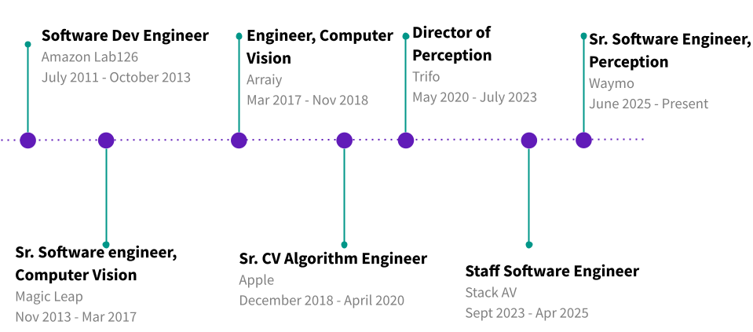

I design and implement computer vision systems. My interests lie in self-supervised learning for vision, 3D mapping/tracking and robotic perception.
I work for Waymo on the Perception team, where we are building the world's most trusted driver.
Previously, I have been involved in early efforts in 3 startups: Stack AV, Magic Leap (valued at 2 billion dollars as of 2021), and Arraiy (Acquired by Matterport). My roles have involved creating the core technologies for consumer and enterprise computer vision products in these companies. In addition, I have worked for large companies such as Apple and Amazon on their consumer devices.
I created the ChArUco Board for camera calibration and collaborated with Sergio Garrido-Jurado to introduce it to OpenCV.
Find me on: LinkedIn, Google Scholar, Github or drop me an email at: krishnasamy <dot> prasanna <at> gmail <dot> com

At Trifo, I was the Director of Perception where I led our perception and prototyping efforts. My technical responsibilities included:
At Apple, I implemented deep learning based event detection algorithms on videos. I extensively analysed 3D time series data and implemented 3D algorithms such as fast plane fitting and orientation estimation on pointclouds.
At Arraiy, I worked on making visual content creation easier for artists using the latest in computer vision and deep learning. I worked on solutions for matting foregrounds using deep learning and geometry. Arraiy was acquired by Matterport. New York Times article
I worked for Magicleap Inc. as a computer vision engineer where I worked on hand pose estimation, deep learning for gestures, depth cameras, object tracking, multiple camera pose and calibration. These were features that enabled mixed-reality experiences.
Prior to that, I was at Amazon Lab126 on their emerging technologies team. Here, I worked on object tracking, machine learning for gesture recognition, and 3D plane finding.
My graduate school work was under Prof. David Kriegman and Prof. Serge Belongie on modeling distorted fingerprints and increasing the accuracy of fingerprint recognition systems.